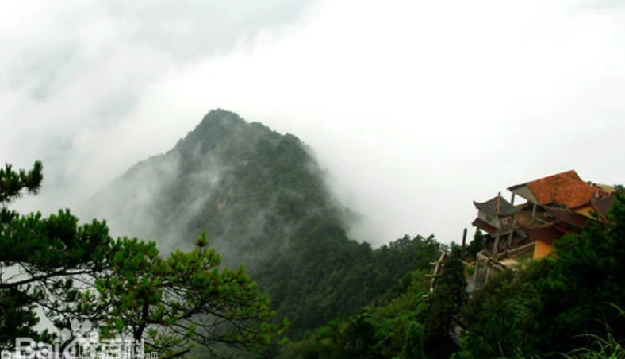
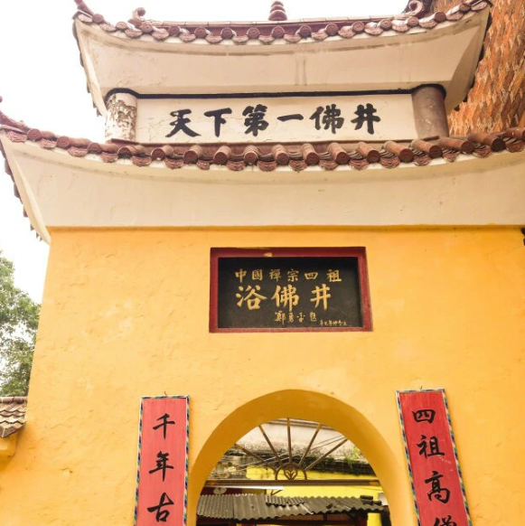
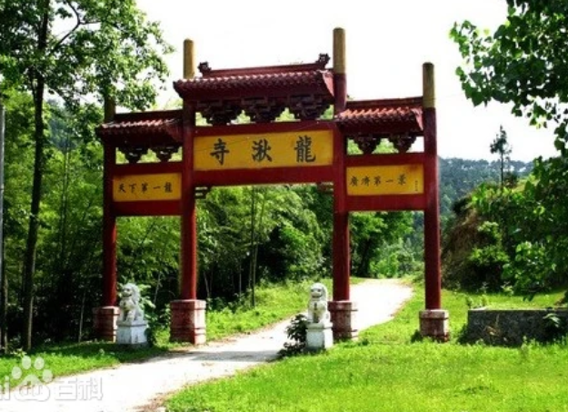
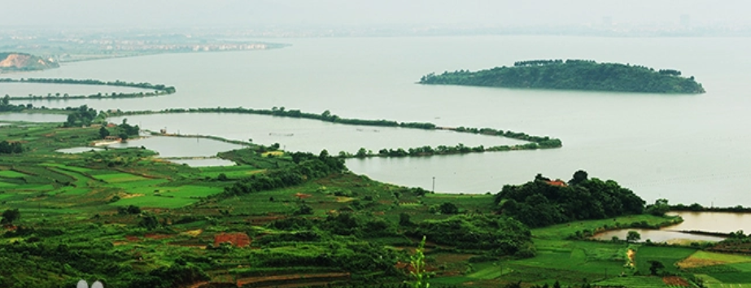

广济时光景区原名武穴市滨江公园，于以“盈彩水岸、大美港城”定位，2016年1月16日开园，2018年1月9日获批国家4A旅游景区。截至2018年，景区已完成公园中轴车道，江堤景观带和滨江景观带，康体健身区、文化体验区、生态活动区，荷塘月色、童趣盎然、动感之都、广济禅缘、辛亥志士、永宁镇江、城市记忆、把舵远航八个节点，杉云映影、假山跌水、竹影风清、蟾宫折桂、文化长廊、饶汉祥故居、萦气东来、江边草舍、对景之石、领航之舵、滨江垂柳十二景点。
横岗山为大别山南端一峰，位于湖北省位于蕲春、梅川镇重峦叠嶂，宛如龙卧其巅，故名“横岗”，最高峰815米。横岗山寺庙始建于隋初，禅宗上祖道信幼年曾在此出家，卓锡七年。唐宋时佛道合一，山上佛寺道观盛极一时，有“庙宇七座，殿厢塔室七十余间”。1990年新落成之灵隐寺大雄宝殿，又使香火渐盛，现每年来山上进香观光者多达数十万余人。 [4]1988年经省民宗局批准，正式开放佛寺活动。1992年横岗山被中国林业部（现部门改为中国国家林业局）批准成立“横岗山森林公园”


浴佛井位于武穴市梅川镇今粮管所右侧，又名清净井。人们为纪念道信诞生，把每年三月初三定为庙会日，还把那口井取名叫“浴佛井”。浴佛井内圆外方，井口长0.6米，宽0.53米，一块正六边形的青石井圈覆盖其上，井壁上端由一圈花岗石镶嵌而成。井圈每个角和边都刻有一朵荷花瓣，雕刻精细，形态逼真，宛如12朵盛开的莲花。井口北侧立有一块石碑，上镌明代万历年间所书“浴佛井”三个大字，苍劲浑厚。人据地而名，地藉人而灵。“浴佛井”的得名，源于中国禅宗四祖道信。
龙湫寺，坐落余川镇干仕垸附近，寺祀费季龙君偶像，神座下有暗泉一眼，游人投以铜钱，则叮当作响，串串不绝。寺侧有名为螺丝旋溪涧一曲，干旱不涸，溪水淙淙作响，静中谛听，如雨声淅沥。故名之曰：“龙湫夜雨”。


武山湖，古名青林湖，以湖畔依青林山而得名。后以湖中耸峙武山，遂改名为“武山湖”。湖阔水深，武山青凸水面，宛若“水晶盘里拥青螺”。且以盛产鱼类，故有“金湖”之称。湖周黄芦白荻丛生，武山林木葱茏，沙鸥翔集，锦鳞游泳，陆地则牧笛悠扬，水上则渔歌互签。夜间渔火星星。桨声款乃；晴宵皓月悬空，静影沉壁，游踪驻此，其乐何极。故名之曰：“武湖明月”。